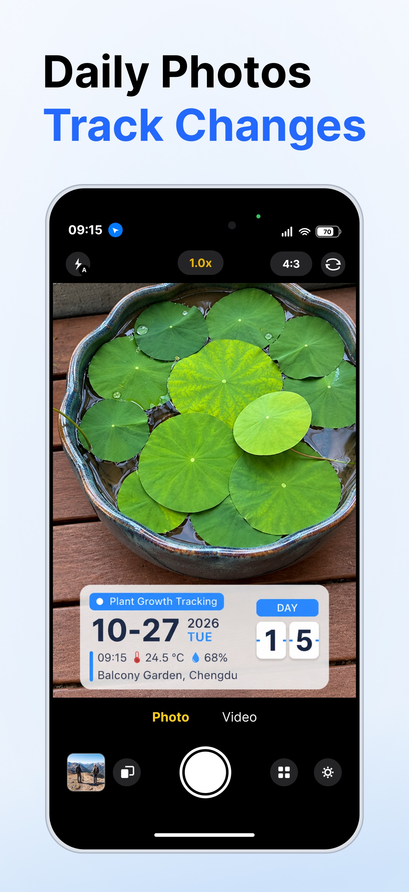

How to add a Day Counter watermark to photos on iPhone
Choose a Day 1 date in Timestamp Camera. The watermark shows the day number when you take a new photo.
Set the date that counts as Day 1
- Open Timestamp Camera on iPhone and choose Day Counter. In iOS app version 1.8.1, the same template is listed as Plant Growth Journal in the template list.
- Tap the watermark in the camera preview to open template settings. Set Day 1 to the date you began the project or want to remember.
- Check the day number in the preview, add a note if helpful, and take the photo. Keep the same starting date when you return for follow-up photos.
How is the day number counted?
If March 1 is Day 1, a photo taken on March 7 shows Day 7. You can skip the days in between and still pick up the same count at your next photo.
The watermark is applied when you take a new photo in the app. Check the preview before shooting, especially if you changed the start date for another project.

Pick a starting date for your subject
- Plants. Use the sowing date to see how many days passed before the first sprout.
- Fitness. Use the date your plan began, then photograph your progress at regular intervals.
- Family milestones. Use the date of birth as Day 1 for a first-100-days photo series. Preview the count before taking the milestone photo.